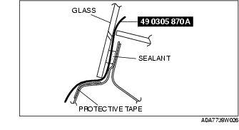
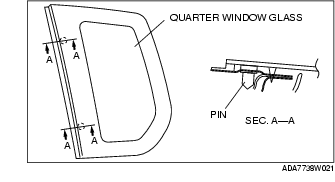

Quarter window glass removal
1. Remove the C-pillar trim.
2. Apply protective tape along the edge of the body and the quarter window glass to protect it from damage.

3. Make a hole through the sealant from the inside of the vehicle using an awl, avoiding the pins.

4. Pass the SST (piano wire) through the hole.

- • Using the SST (piano wire) with bare hands can cause injury. Always wear gloves when using the SST (piano wire).
5. Wind each end of the SST (piano wire) around a bar.
- • Use a long sawing action to spread the work over the whole length of the SST (piano wire) to prevent it from breaking.
6. Working with another person, saw through the sealant around the edge of the glass.

7. Pull the quarter window glass outward, then disengage the pins from the body.
